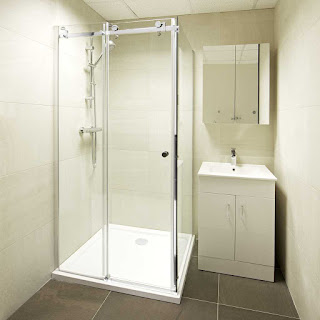

Kian berkembangnya kemajuan zaman, menjadikan banyak bahan atau material pelengkap yang bisa mempercantik hunian atau tempat usaha anda. Banyak material penunjang yang bisa diterapkan seperti kaca, parket lantai kayu dan masih banyak lagi. Tak hanya memperindah, namun material pelangkap tersebut dapat memberi garansi keamanan pada penghuni di dalamnya. Tapi, tidak cuma keindahan tapi juga keamanan bagi penghuni di dalamnya. Tidak halnya hadir berbagai material kaca dan juga lantai yang semakin melengkapi skor keindahan sebuah bangunan.
Macam-jenis kaca diantara lain kaca tempered, kaca shower, railing kaca, kanopi kaca Bogor dan masih banyak lagi. Semua material tersebut dapat di aplikasikan harga sebuah hunian menonjol lebih cantik nyaman dan juga aman. Berikut ini sedikit penjelasan mengenai berjenis-jenis macam kaca dan fungsi kaca dan juga parket lantai kayu jati yang bisa anda dapatkan.
Distributor, Supplier & Jasa Pasang Kanopi Kaca Bogor
Banyak macam kaca kanopi yang dipakai sebagai atap, tidak cuma satu macam saja. Atap kaca skylight banyak diterapkan pada rumah, gedung, kantor, café yang mengusung gaya modern untuk membuat efek cahaya yang dramatis pada ruangan bagian bawahnya serta memberi kesan modern pada bangunan. Harga dari tiap-tiap kaca yang ditawarkan cukup pelbagai tergantung kaca yang nanti akan diaplikasikan. Ada sebagian alasan mengapa Pintu Kaca Shower banyak diterapkan salah satunya yaitu kaca lebih nampak bersih dan rapi dan juga lebih mudah dalam perawatannya. Sekiranya tembus pandang, kaca meresap cahaya yang masuk sehingga kian tebal kaca maka kian sedikit cahaya yang bisa melewatinya, maka sifat transparannya makin berkurang.|Di samping pintu kaca shower akan membikin kamar mandi kecil terlihat lebih besar. Atap akrilik atau dapat juga disebut atap kaca acrylic ini banyak ditemukan di sebuah bangunan rumah, seperti ruko, apartemen, restoran, mall, sampai bangunan gedung.
Dis.or.id bisa menolong anda yang ingin memasang atap kaca skylight pada gedung, dengan pelbagai kelebihan yang dapat anda peroleh dengan memanfaatkan jasa yang di tawarkan dis.or.id. Sesudah kaca untuk atap kanopi cukup digemari. Tak anda sedang mencari kanopi kaca Bogor, anda dapat seketika mengunjungi dis.or.id.
Info Lengkap Pemesanan
Google Maps: https://www.google.com/maps/d/u/0/viewer?mid=12-N5cMmHbEOEG6n-94L4JatnBnNRTFkr&ll=-7.27380280025364%2C112.65243155000007&z=18
Note: https://www.facebook.com/notes/distributor-of-industrial-supply/kontraktor-jasa-pasang-kanopi-kaca/1785710151728864/
Event: https://www.facebook.com/events/227495344457982/
Portfolio Produk: https://www.facebook.com/1681607345472479/photos/?tab=album&album_id=1712629809036899
Distributor & Supplier Kaca Shower

Kaca shower yaitu kotak atau alat yang berfungsi sebagai penyekat ruang khusus untuk kamar mandi. Dengan menggunakan kaca shower pastinya kamar mandi yang dimiliki akan lebih terlihat mewah dan menjadi sekat antara area berair dan zona kering. Kaca shower ini bisa menjadi dan mempunyai nilai estetika tersendiri karena dengan memasangnya tentu kamar mandi anda akan menonjol lebih indah dan mewah layknya kamar mani hotel. Tentunya banyak kelebihan yang bisa di peroleh dari pemakaian kaca shower pada kamar mandi di rumah anda. Kelebihan shower screen dibanding dengan cara penyekatan yang lain ialah dihasilkan dalam format yang sudah jadi dan tinggal dipasang saja. Apalagi sekarang telah ada toko penjual shower screen yang memasarkan produknya dalam metode satu paket termasuk pemasangannnya. Kita tak perlu repot lagi mencari tukang sendiri sebab pemasangan alat sekat ini memang membutuhkan teknik tersendiri.
Tak anda sedang mencari kaca shower untuk kamar mandi, anda bisa segera mengunjungi dis.or.id. Harga yang ditawarkan malah tergolong amat murah.
Distributor, Supplier & Jasa Pasang Kanopi Kaca

Seiring dengan perkembangan zaman di dunia properti, kini kanopi kaca Bogor terlah berkembang cepat mengikuti arsitektur modern . Atap kaca skylight ditujukkan untuk menerima cahaya natural UV yang mempunyai fungsi sebagai penerangan dalam sebuah ruang. Tak hanya sekadar tembus pandang. Ada sebagian alasan kenapa Pintu Kaca Shower banyak digunakan salah satunya yakni kaca lebih kelihatan bersih dan rapi dan juga lebih gampang dalam perawatannya. Kalau tembus pandang, kaca meresap sinar yang masuk sehingga semakin tebal kaca karenanya semakin sedikit sinar yang dapat melewatinya, maka sifat transparannya makin berkurang.|Di samping pintu kaca shower akan membikin kamar mandi kecil nampak lebih besar. Atap akrilik atau dapat juga disebut atap kaca acrylic ini banyak ditemukan di sebuah bangunan rumah, seperti ruko, apartemen, resto, mall, hingga bangunan gedung.
Dis.or.id bisa menolong anda yang ingin memasang atap kaca skylight pada gedung, dengan beraneka kelebihan yang dapat anda dapatkan dengan memanfaatkan jasa yang di tawarkan dis.or.id. Apabila itu, kanopi juga bisa melindungi kendaraan beroda empat dan kendaraan lain anda. Banyak bangunan seperti gedung perkantoran, perumahan, ruko dan apartement yang menerapkan kanopi kaca Bogor tempered. Setelah kaca untuk atap kanopi cukup digemari.
Jasa Maintenance Kaca

Jasa maintenance kaca adalah perusahaan yang akan membantu agar gedung perkantoran Anda terlihat seperti baru. Kaca menjadi kusam. Kelengkapan tipe kotoran seperti debu serta cahaya matahari dan juga hujan tak jarang membuat kaca gedung menjadi kusan dan tidak menarik. Kekuatan yang di pakai untuk jasa maintenance kaca diantaranya godole, rope access, crane, dan scaffolding.
Dis.or.id memahami kian banyak gedung pencakar langit dengan betuk yang berbeda-beda. Disana anda bisa memanfaatkan jasa maintenance kaca dengan kekuatan pakar yang cakap membersihkan gedung kaca dengan produk pembersih kaca apa yang terbaik untuk menghilangkan kotoran dan kusam. Dis.or.id memiliki semua daya ahli yang di rekrut hanya mereka yang profesional yang tahu persis bagaimana metode memakai alat dan bagaimana membersihkan kaca gedung bertingkat. Oleh karena itu, dis.or.id hanya memilih orang-orang yang betul-betul profesional dan telah memiliki pengalaman dalam hal maintenance kaca. Dengan sudah memberikan training kepada kekuatan spesialis sehingga mereka sudah bisa menjalankan profesi mereka dengan amat baik.
Jasa Pemasangan Kaca Tempered
Tak anda mebutuhkan jasa maintenance kaca, anda dapat mengunjungi dis.or.id. Selain hanya mengerjakan pemasangan kaca tempered untuk gedung perkantoran, melainkan juga untuk rumah hunian. Masyarakat telah paham keunggulan dari kaca ini. Sementara itu, untuk rumah hunian, bagian dari rumah seperti kamar mandi serta kanopi umumnya terbuat dari kaca tempered. Namun dulu cuma gedung perkantoran atau sentra perbelanjaan modern saja yang memakai jenis kaca ini, sekarang rumah hunian juga sudah dibangun dengan kaca tempered.
Bila itu, beraneka bagian properti akan kian menarik jikalau diciptakan dari kaca tempered seperti kanopi, pintu, kamar mandi, dan balkon.
Banyak hal yang bisa dilakukakn kaca tempered ini salah satunya sebagai pembatas, untuk kamar mandi dan masih banyak lagi. Namun, pemasangan kaca tempered ini sepatutnya ekstra hati-hati. Bukan sembarang alat yang dipakai untuk memotong kaca tempered pantas dengan keperluan. Tak dikala ini anda sedang berharap membangun suatu bangunan atau gedung, anda dapat memanfaatkan kaca tempered untuk diterapkan langsung ke semua tipe bidang. Lebih dari itu, dis.or.id telah menyiapkan daya pakar yang siap untuk mengerjakan pemasangan, entah itu kaca tempered untuk kanopi, pintu, partisi, balkon, dan lain sebagainya. Harga yang ditawarkan untuk pemasangan kaca tempered benar-benar murah.
Distributor & Supplier Pintu Kaca

Pintu kaca sungguh-sungguh berkhasiat bagi anda yang berkeinginan menabah kesan gedung lebih cantik dan mewah. Kian banyak contoh pintu kaca dikala ini seperti kaca tanpa bingkai atau frameless yang banyak digunakan untuk pintu perkantoran dan pusat perbelanjaan. Tidak Anda menyukai dengan pintu kaca dengan frame, Anda dapat pilih apakah pigura tersebut terbuat dari bahan kayu atau aluminium. Kini tersebut dapat terbuat dari kayu atau aluminum. Desain tersebut dapat disesuaikan dengan konsep properti Anda. Dalam hal ini, terdapat beberapa ragam kaca dengan kwalitas yang terbaik. Kini paling banyak diminati saat ini merupakan kaca tempered sebab jauh lebih kuat dan tahan lama.
Dengan tenaga ahli yang telah betul-betul handal dalam membikin beragam teladan pintu kaca.
Dis.or.id juga menyiapkan sebagian tipe kaca dengan ketebalan yang berbeda. Dis.or.id mempunyai energi yang sudah sangat profesional di bidang ini.
Jual Kaca Cermin
Kaca cermin tak cuma berfungsi untuk berkaca saja melainkan juga sebagai pemanis ruangan. Anda dapat tentukan desain seperti apa yang Anda inginkan. Ada cermin persegi yang ditempelkan beraturan, cermin berbentuk seperti daun, dan lain sebagainya. Jadi, hanya nampak transparan dari satu sisi saja. Cermin minimalis mempunyai siku. Jikalau itu, sesekali cerminnya tidak ada bingkainya atau yang kerap kali disebut dengan kaca cermin frameless.
Tidak cuma itu, harga yang di tawarkan sangatlah terjangkau dengan kualitas dan juga kualitas terbaik. Banyak orang yang lebih menyukai dengan desain kaca cermin minimalis. Atau barangkali Anda mengharapkan kaca cermin yang seketika dapat ditempelkan pada komponen furniture tertentu seperti pintu lemari. Tak model lemari pakaian di mana komponen pintunya terbuat dari kaca cermin. Cermin ini umumnya ditempatkan di kamar mandi, di atas wastafel, atau di kamar tidur.
Jasa Pemasangan Railing Kaca

Tidak konsep rumah modern ketika ini, kebanyakan rumah dibangun dengan desain minimalis. Bahkan juga bagian pegangan atau framenya. Tapi, kecuali desain, Anda juga perlu melihat bahan yang digunakan. Karenanya dari itu, para produsen berupaya untuk menjadikan railing yang terbuat dari kaca dengan teladan yang berbeda-beda. Tak kaca ini pecah, pecahannya halus sehingga tidak akan melukai orang. Pun juga bahan yang digunakan.
Dalam hal ini, ada banyak ragam kaca yang bisa dipakai untuk membuat railing ini. Tidak ini tidak cuma ditentukan oleh ketebalan atau harga tapi juga oleh tipe. Ada kaca tempered yang kini diminati banyak orang. Kalau itu, kaca ini dapat pecah tetapi tak menimbulkan pecahan yang runcing namun pecahan kecil-kecil dan lembut. Dikatakan amat aman lantaran kaca tempered tak memunculkan pecahan yang runcing saat tiba-tiba kaca pecah entah itu imbas kecelakaan atau musibah seperti gempa. Tidak anda dikala ini sedang membutuhkan railing kaca untuk kantor, rumah dan tempat-tempat lainnya, anda bisa mengunjungi dis.or.id.
ukuran dan ketebalan railing kaca telah tersedia.
Distributor & Supplier Pintu Lipat Kaca
Karena keunggulan yang dimiliki tersebut, Anda pasti berdaya upaya harga pintu kaca lipat frameless ini mahal. Pada kenyataannya, harga kaca tempered ini tidak terlalu mahal. Mak dari itu, kaca ini ditawarkan dengan harga yang cukup dan relatif murah. Sekarang pasti, modelnya banyak sesuai dengan yang Anda butuhkan.
Timbul pertanyaan kenapa Harus memakai kaca tempered. Banyak pertimbangan yang membikin Anda pasti yakin untuk memilih kaca tempered ketimbang macam kaca yang lainnya.
Jasa Pemasangan Kubikel Toilet

Kubikel kaca banyak ditemui di bermacam-macam daerah besar seperti perkantoran, gedung, bahnkan kini juga dapat di gunakan untuk hunian rumah. Banyak keuntungan yang bisa di daptkan dengan menggunakan kubikel kamar kecil diantaranya adalah tampilan yang lebih elegan dan lebih bersih.
Jika anda berminta untuk membeli kubikel kaca, anda dapat mengunjungi dis.or.id. Kalau anda sedang memerlukan kubikel toilet, anda bisa lantas mengunjungi web dis.or.id. WC kubikel juga memberikan hal yang efisien dan tepat sasaran dalam pembagian space kamar mandi yang kecil.
Harga yang ditawarkan pun cukup relatif murah.
Kaca shower yang di jual di jamin kaca shower yang memiliki mutu terbaik dan berkwalitas tinggi.
Distributor & Supplier Partisi Kaca
Partisi kaca tak lagi dianggap sebagai hal yang aneh lagi. Biaya ini tentu bukan tanpa alasan. Yang pertama, tarif pembuatan dan pemasangan partisi kaca jauh lebih murah dibandingi dengan partisi yang terbuat dari batu bata. Banyak ruangan yang disekat dengan memakai partisi kaca. Dalam hal ini, Anda tahu macam kaca apa yang bagus untuk partisi. Selain itu, tentukan juga desainnya apakah partisi kaca tersebut frameless (tanpa pigura) atau dengan frame. Kecuali itu, pertimbangkan juga privacy. Ini yang akan Anda menentukan hal yang pas apakah Anda kaca transparan, semi transparan, atau kaca cermin. Tidak hanya rumah, kini perkantoran juga dijadikan sedemikian rupa supaya tampak amat minimalis dan menarik. Alasan yang ketiga, partisi kaca ini tak menghabiskan space. Pun ruangan disekat dengan partisi ini seperti kamar mandi dalam dan taman dalam ruangan. Akan tapi, Anda semestinya selektif dalam hal memilih kaca untuk partisi. Anda patut tahu ada kaca transparan, semi transparan dan kaca yang sama sekali tidak transparan yang kerap disebut dengan kaca cermin. Disana anda akan partisi kaca yang sesuai dengan anda.